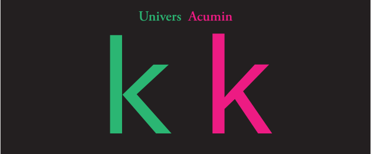
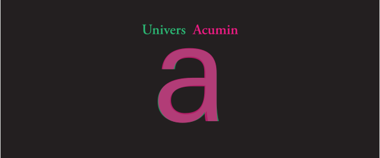
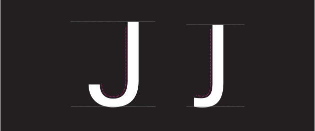
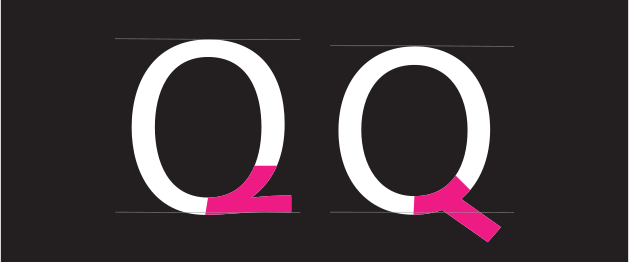
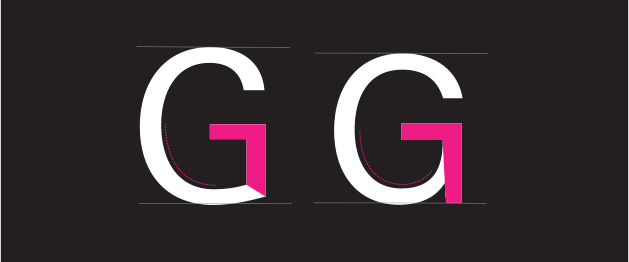

This typeface is a neo-grotesque sans-serif typeface family designed by Swiss type designer Adrian Frutiger in collaboration with Linotype Design Studios. Frutiger began sketching the typeface in Zurich in the early 1950s and completed its development in France, where it was released in 1957 by the Paris foundry Deberny & Peignot. The typeface was created during the rise of photocomposition technology, which was beginning to replace traditional metal type, and Univers was specifically designed to take advantage of this new production method. Historically, it was influenced by nineteenth-century German grotesque sans-serifs but refined to match the clarity and rationality valued in the Swiss Modernist design movement. One of Univers’s most important innovations was its systematic family structure, introduced through Frutiger’s two-digit numbering system that categorized weight, width, and style, allowing designers to easily navigate a large, unified type family. Its versatility and modern aesthetic led to rapid licensing by companies such as Linotype, Monotype, American Type Founders, and IBM, helping make it one of the most widely used typefaces of the 1960s and 1970s.
Acumin
This typeface is a contemporary neo-grotesque sans-serif typeface family designed by American type designer Robert Slimbach and released by Adobe in 2015 as part of the Adobe Originals library. The typeface was developed during a period when typography had fully transitioned into digital workflows, and it was intended to function seamlessly across modern software, web, and print environments. Historically, Acumin reflects the influence of earlier systematic type families—especially Adrian Frutiger’s Univers—through its extensive range of coordinated weights and widths, totaling dozens of styles. Slimbach designed Acumin to be a highly neutral and flexible type system that could perform in a wide variety of uses, from interface design to signage and editorial typography. Its release also reflects Adobe’s broader role in the digital type era, as Adobe Originals helped redefine how typefaces are produced, distributed, and used in fully digital design ecosystems.
General Comparisons

The lowercase ‘k’ in Univers and Acumin are the same height from baseline to ascender line. The leg and arm on the Univers ‘k’ create a v-shape and touch the stem together whereas the leg of the Acumin ‘k’ connects to the arm. The arm of the Acumin ‘k’ is all that connects to the stem..t lowercase: The Univers terminal on the ‘t’ is longer and more curved compared to the Acumin ‘t’. The top of the stem of the Acumin ‘t’ is straight across whereas the Univers stem is slanted.The aperture of the Acumin ‘y’ is slightly smaller than the Univers ‘y’. The Acumin descender curves parallel to the descender line whereas the Univers descender ends straight.A uppercase: The capital ‘A’ of Univers is taller than that of Acumin ‘A’, but the crossbar of the Acumin is slightly higher and thicker. This is due to the tighter apex of the Acumin ‘A’.The Univers and Acumin uppercase ‘R’ are very similar. The spur on the tail of the Univers ‘R’ is more curved than that of the Acumin ‘R’.The upper and lower counters of the Univers ‘8’ are the same shape. The upper counter is smaller than the lower counter in the Acumin ‘8’.Both the Univers and Acumin comma touches the descender line. The Acumin comma curves around the previous character but the Univers comma remains straight.The Univers quotations are straight and end at the x-height whereas the Acumin quotations are curved, ending slightly past the x-height.The lowercase ‘d’, ‘g’, and ‘y’ all share the same x-height. The Univers ‘E’ ascender is slightly taller than Acumin. Univers letterforms appear slightly more rigid in their curves, whereas Acumin curves are smoother and more rounded.
Some Similarities

The bowl, terminal, and spur of the Univers and Acumin lowercase ‘a’ are extremely similar. The ‘e’ on Univers and Acumin share the same x-height. The finial on the Univers ‘e’ is taller and more square than the Acumin finial.The ‘g’ of these two typefaces are single-storied. The Univers ‘g’ has a slightly bigger bowl and deeper ear than the Acumin ‘g’.The stem of the ‘r’ for Univers and Acumin are the same height. The Univers shoulder curves more downward and is wider than the Acumin shoulder.The only difference between the ‘b’ for these typefaces the Univers ‘b’ is slightly wider.The Univers braces are thinner than the Acumin braces, thus creating a sharper point than Acumin. The parentheses of Univers create a v-shape and are tighter to the letterform. The Acumin parentheses are rounded around the letterform.
Some Differences

The Univers uppercase ‘J’ has a significantly more dramatic hook than the Acumin uppercase ‘J’. The terminal of the Unveris ‘J’ is parallel to the baseline and the Acuman ‘J’ is perpendicular.

The counter on the Univers ‘Q’ is more of an oval shape compared to the Acumin ‘Q’. The tail of the Univers ‘Q’ does not go below the baseline whereas the Acumin tail clearly does.

The uppercase ‘G’ of Univers does not have a spur whereas the Acumin uppercase ‘g’ has a spur that connects to the baseline.The Univers number ‘5’ uses right angles for its corners whereas the Acumin number ‘5’ uses more open and slanted angles. This creates a more handwritten feel for the Acumin typeface.The stem of the Univers number ‘2’ is straighter than the curve of the Acumin number ‘2’. The Acumin ‘2’ is significantly shorter than the Univers ‘2’.The dot of the Univers question mark is a square whereas the Acumin dot is an upright rectangle. The Acumin hook is more dramatic and the terminal parallel to the baseline compared to Univers.
Examples and visual references
Univers
Univers 1: This examples showcase wayfinding signs at Gallusplatz in St. Gallen, Switzerland, set in Adrian Frutiger’s Univers typeface.This example showcases the album cover for God Is Not Dead, He’s Still Alive (1970) by the Cooke Duet, featuring Univers Condensed Bold Italic typography.
Acumin
This examples showcases covers from GovLoop’s Pocket Guides series (2017), featuring a clean grid-based design set in Acumin.This example showcases the branding and packaging for The Sandz sandwich shop (2020), featuring Acumin used across multiple weights and widths.